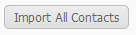
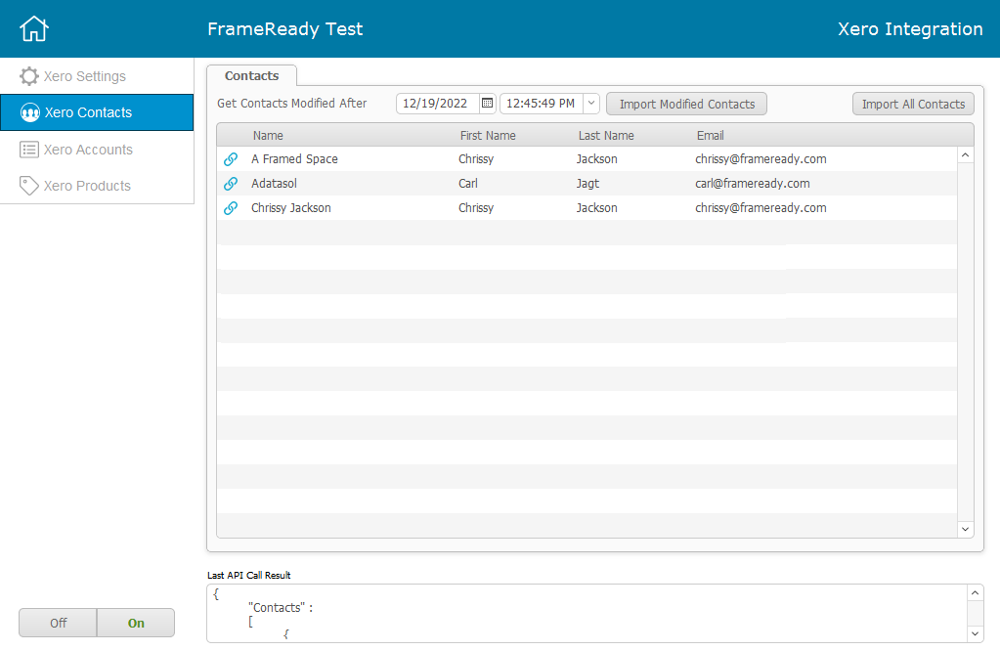
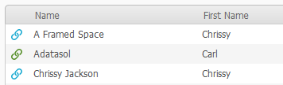
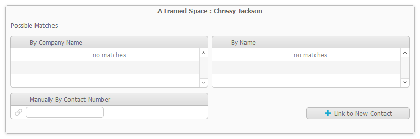
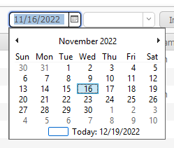
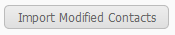

Xero Contacts
Use these steps to work with your Xero Contacts in FrameReady.
How to Work with Xero Contacts
-
The first step is to import all of your Xero contacts into the integration.
-
The second step is to link all of the imported contacts to individual contacts in FrameReady.
-
Please note: you are responsible for reviewing each imported Xero Contact and linking it to one of your FrameReady Contacts.
How to Import All of your Xero Contacts
-
Open the Xero Integration.
Main Menu > Setup Data > Fiscal tab > Xero Integrations Settings button. -
Click the Xero Contacts button (left sidebar).
-
To import all contacts from your Xero account, click the Import All Contacts button (top right).

-
Your Xero contacts are imported into the integration.

-
A blue chainlink icon indicates that the Xero contact is NOT linked to a FrameReady contact.
A green chainlink icon indicates that, yes, the Xero contact is linked to a FrameReady contact.

-
Click the blue chainlink icon; a new window opens.
When done, close the window with the red X (top right).

-
The above Xero contact has not yet been linked to a FrameReady contact. You can accomplish this several ways.
First, the Xero Integration attempts to find a match and, if any are found, lists them here; simply click the result you want to match.
If no matches are found, then you will see "no matches" instead.
If you know the Contact ID# in FrameReady, then you can enter it into the Manually By Contact Number field; as soon as you click out of the field, FrameReady looks up the number and displays the Contact business name. -
To link this Xero contact to a new FrameReady contact, click the Link to New Contact button.
A new record is created in your FrameReady Contacts file; the new ID# is also displayed.
The blue chainlink icon turns green. You can click the blue arrow to go to the new record or close the window. -
Your goal is to link all the blue chainlink Xero contacts with a FrameReady contact (which changes to a green chalink icon).
How to Import Xero Contacts that were Modified After a Date
Instead of importing all Xero contacts, you can specify and a date and time and import only those contacts that have been modified since.
-
Open the Xero Integration.
-
Click the Xero Contacts button (left sidebar).
-
To import contacts from your Xero account that were modified after a known date and time, click the calendar icon and choose a date.

-
You must also enter a time in the next field, e.g. 1 for 1:00pm.
-
Click the Import Modified Contacts button (top right).

-
Any Xero contacts that were modified (in Xero) after your specified date and time are imported and updated.
Last modified 5/8/2023.
© 2023 Adatasol, Inc.